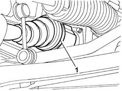
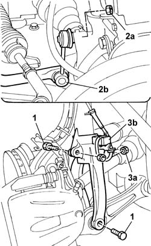
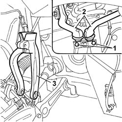
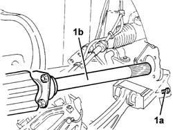

2710A31 INTERMEDIATE DRIVE SHAFT - R.R.
- Path
- Procedures > 27 AXLE > 2710 FRONT AXLE > 2710A DRIVESHAFTS AND JOINTS > 2710A31 INTERMEDIATE DRIVE SHAFT - R.R.
- Kind
- repair procedure (removal / refitting; the operation number is the code)
- Applies to
- all engines; all production periods
- Interactive page
- https://sloeber94.github.io/elrnDB-lThss/en/#/78463
Applies to: all engines; all production periods
 Removing
Removing
 Refitting
Refitting- Position the vehicle on a lift.
See in Op. 4450B04 Right FRONT WHEEL (one) - R.R.
- Raise the lift.
See in Op. 7055B42 FRONT WHEEL ARCH LINER (one), left or right - R.R.
See in Op. 7055B64 Engine compartment DUST SEAL in front wheel arch (one), left or right - R.R.
1. Disconnect the right driveshaft band fixing it to the intermediate driveshaft.

Applies to: all engines; all production periods
1. Undo the fixing bolts.
2. Undo the fixing nut (2a) and disconnect the end of the anti-roll bar (2b).
3. Undo the fixing nut (3a) and move the accelerator sensor (3b) aside.

Applies to: all engines; all production periods
1. Undo the fixing bolts.
2. Separate the two heads from the suspension housing.
3. Remove the suspension fork.
- Move the steering knuckle backwards and release the three-lobe joint for the driveshaft from the housing in the intermediate shaft.

Applies to: all engines; all production periods
1. Undo the bolts (1a) fixing the intermediate driveshaft to the support, then remove the intermediate driveshaft (1b) complete with sliding joint.

Applies to: all engines; all production periods
Refitting
Removing- Check that the intermediate driveshaft is intact.
- Fit the intermediate driveshaft in the housing on the support.
- Tighten the bolts fixing the intermediate driveshaft to the support.
- Fit the driveshaft in the housing on the intermediate driveshaft.
 | Description | Qty. | Component | Type | Classification |
|---|---|---|---|---|---|
. | TUTELA MRM ZERO | 140 ± 10 | DRIVESHAFT CONSTANT VELOCITY JOINTS | Grease |
- Fit the suspension fork on the shock absorber.
- Return the steering knuckle to its original position checking that the driveshaft is fitted in the housing on the intermediate driveshaft.
- Secure the ends in the special housings in the suspension and tighten the fixing bolts to torque.
 | Value - daNm | Fastening | Component | Ø |
|---|---|---|---|---|
. | 3.4 | Bolt | FRONT SHOCK ABSORBERS (S.M.) | M8 |
- Tighten the bolts fixing the forks to torque.
| Value - daNm | Fastening | Component | Ø |
|---|---|---|---|---|
. | 9 | Bolt | FRONT DAMPER FORK ON WISHBONE | M12 |
| Value - daNm | Fastening | Component | Ø |
|---|---|---|---|---|
. | 11.6 | Bolt | FRONT DAMPER FORK ON WISHBONE | M12 X 1.25 |
- Tighten the nuts fixing the anti-roll bar track rod ends to torque.
| Value - daNm | Fastening | Component | Ø |
|---|---|---|---|---|
. | 5.5 | Nut | FRONT ANTI-ROLL BAR JOINTS | M10 X 1.25 |
- Fit the acceleration sensor in the housing on the fork and secure it using the nut.
- Secure the driveshaft to the intermediate driveshaft using new bands.
See in Op. 7055B64 Engine compartment DUST SEAL in front wheel arch (one), left or right - R.R.
See in Op. 7055B42 FRONT WHEEL ARCH LINER (one), left or right - R.R.
- Lower the lift.
See in Op. 4450B04 Right FRONT WHEEL (one) - R.R.
- Remove the vehicle from the lift.
Topics linked from this page (3)
- 4450B04 Right FRONT WHEEL (one) - R.R.
- 7055B42 FRONT WHEEL ARCH LINER (one), left or right - R.R.
- 7055B64 Engine compartment DUST SEAL in front wheel arch (one), left or right - R.R.
Topics that link to this page (18)
- 1008A44 RIGID REAR power unit MOUNTING - R.R.
- 1008A44 RIGID REAR power unit MOUNTING - R.R.
- 1008A44 RIGID REAR power unit MOUNTING - R.R.
- 1020A20 CRANKCASE SUMP - R.R. clean contact surfaces and apply sealant
- 1020D08 FRONT crankshaft oil seal COVER - R.R. and replace seals with timing belt(s) removed for versions with automatic transmission
- 1020D12 Crankshaft oil seal FRONT COVER - R.R. and Replace seals
- 1056B90 SYSTEM CABLE LOOM - R.R.
- 1080B39 RIGHT CATALYTIC PRECONVERTER - R.R. or Replace Gasket
- 1084B12 ENGINE OIL PUMP - R.R.
- 1084B16 ENGINE OIL PUMP - R.R. FOR VEHICLES WITH AIR CONDITIONING
- 1084B23 OIL PUMP IDLER DRIVE GEARS AND CHAIN - R.R.
- 1084C10 Engine oil heat exchanger - R.R.
- 2110D56 RIGHT FLANGE on differential - R.R.
- 5520B10 STARTER MOTOR - R&R
- 5530A10 ALTERNATOR - R.R.
- 5530A40 Alternator BRACKETS/MOUNT/SPACER - R&R
- 5530B34 LEAD between junction unit terminal and starter motor - R.R.
- 5530B36 LEAD between starter motor and alternator - R.R.